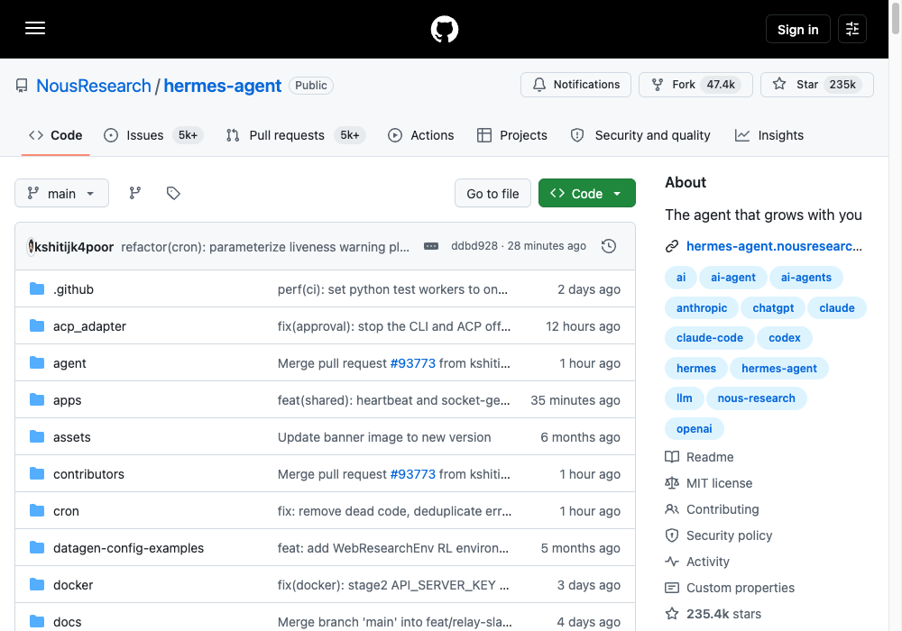
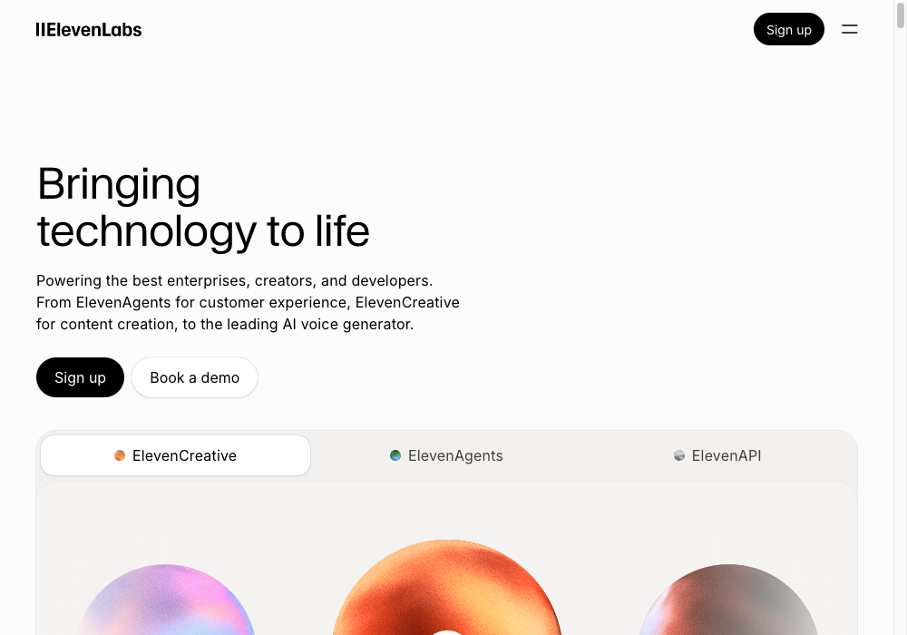

Build Your JARVIS OS — Hermes Edition
The same 4-step build, different engine and voice — self-improving agent, cloud voice, one HUD.
Want the free, fully local version instead? See the original Claude Code + local voice build.
You speak. JARVIS routes the work.
Same loop as the original build — only the engine and the voice layer change.
| Part | What it does |
|---|---|
| Hermes Agent | The engine. Self-improving — creates and refines its own skills as it runs. |
| Obsidian | The memory. Everything lands as linked markdown. |
| ElevenLabs | The ears + mouth. Cloud STT (Scribe) in, TTS out, 70+ languages. |
| Claude | The face. One prompt builds the HUD screen. |
Wire the brain.
Hermes Agent — Nous Research's self-improving agent. It creates skills from experience, improves them during use, and persists what it learns across sessions. Skills are compatible with the open agentskills.io standard, so the same kind of small, single-purpose skill files from the original build carry over directly.

Install (Linux, macOS, WSL2, Termux):
curl -fsSL https://hermes-agent.nousresearch.com/install.sh | bash
Model-agnostic by design — Nous Portal, OpenRouter, OpenAI, or your own endpoint, switched with hermes model, no code changes. Example starter skills, same shape as the original build:
skills/ metrics/ # pulls your numbers inbox/ # the morning brief trends/ # scans what's moving plan/ # writes today's top 3 vault/ # reads + writes memory
Build the memory.
Unchanged from the original build — if it's not in the vault, it didn't happen. The vault lives in Obsidian:

vault/ raw/ # everything captured, untouched wiki/ # distilled knowledge, cross-referenced outputs/ # everything shipped
obsidian.md → · full wiring instructions in the Obsidian × Claude Code guide.
Add the voice.
The original build uses local, private STT/TTS. This edition trades that for ElevenLabs — hosted, ultra-low-latency, and higher setup speed at the cost of a paid API and audio leaving your machine.

Why ElevenLabs: Scribe handles speech-to-text, their core Text-to-Speech API answers back, 70+ languages, and their Voice Agents platform can run the whole STT→agent→TTS loop behind one config instead of wiring two separate local engines.
curl -X POST https://api.elevenlabs.io/v1/text-to-speech/{voice_id} \
-H "xi-api-key: $ELEVENLABS_API_KEY" \
-H "Content-Type: application/json" \
-d '{"text": "Morning brief is ready.", "model_id": "eleven_multilingual_v2"}'
Build the face.
Unchanged — one screen, everything JARVIS knows. Go to Claude and use this prompt:

Build a dark terminal HUD for my OS: system vitals · command deck · schedule · audio I/O · live data from the vault. One screen. No tabs.
Hit run. Open it. Tweak it by voice.
Your voice is the interface.
| Time | What happens |
|---|---|
| 7:00 AM | "Morning brief." Inbox, calendar, AI news — read out loud. |
| 9:00 AM | "Plan today." Top 3 priorities land in the vault. |
| 2:00 PM | "Metrics pull." Subs, views, followers — tracked. |
| 7:00 PM | "Close the day." Reflection logged. Tomorrow queued. |
| Anytime | "Ask anything." The vault remembers everything. |